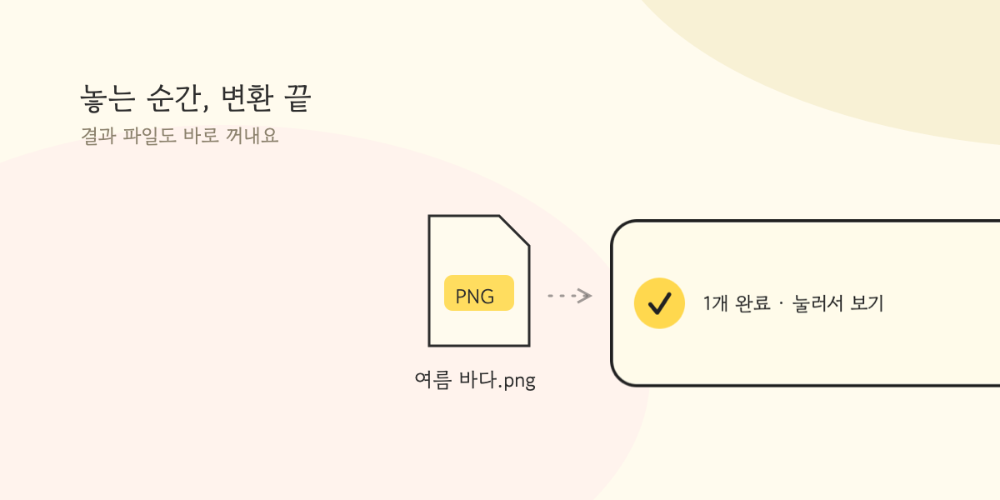
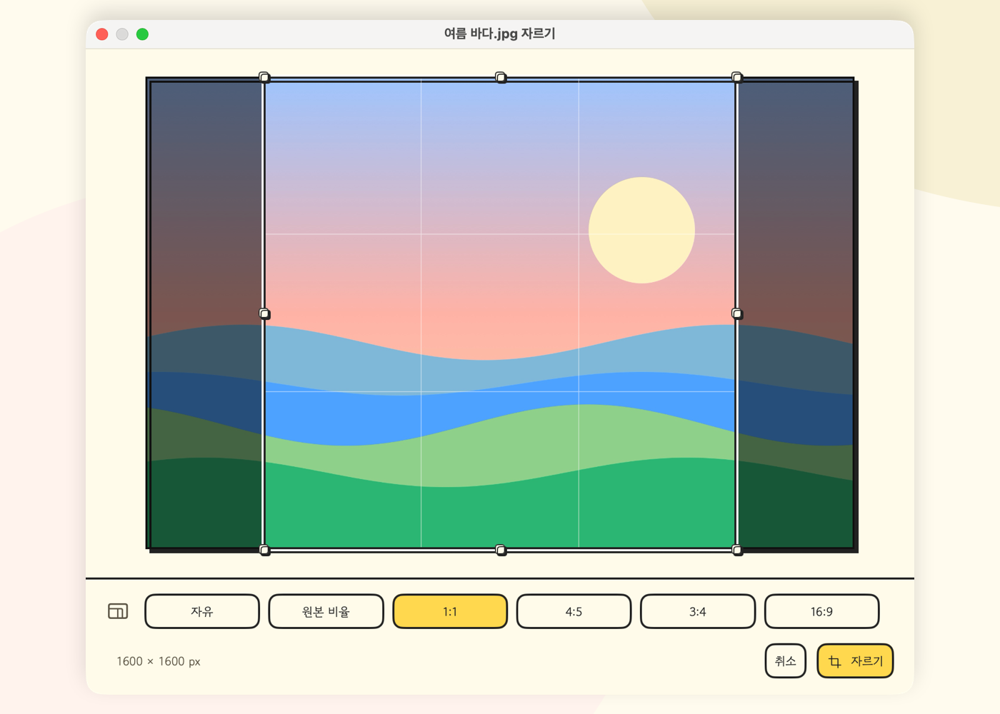

탭은 어디에나
탭을 안쪽으로 당기면 늘어나다가 떨어져 나와 화면 어디에나 둘 수 있습니다. 다시 가장자리 가까이 가져가면 자석처럼 붙습니다.
화면 가장자리에 붙은 작은 탭에 사진이나 PDF를 끌어다 대세요.
선택판이 펼쳐지면 원하는 형식 위에 툭 놓으면 됩니다.
프로그램을 열고 메뉴를 찾고 저장 위치를 고르는 일이 한 번의 끌어다 놓기로 줄어듭니다.
바꿀 사진이나 PDF를 화면 끝의 탭으로 가져갑니다.
선택판이 펼쳐지면 형식 줄 위로 옮겨 원하는 보기를 고릅니다.
손을 떼면 바뀐 파일이 원본과 같은 폴더에 생깁니다. 원본 파일에는 손대지 않습니다.


JPG, PNG, HEIC, TIFF, GIF, PDF 사이를 오갑니다. 폴더째 넣으면 안의 그림을 한꺼번에 바꿉니다.
"3MB 이하", "300KB 이하"처럼 정해 두면 화질을 먼저 조금 내리고 그래도 크면 크기를 줄여 맞춥니다. 학교 게시판이나 신청서 첨부 용량에 맞출 때 편합니다.
사진 여러 장을 PDF 한 권으로 묶거나 PDF 페이지를 그림으로 꺼냅니다.
정사각형, 3:4, 16:9처럼 정해 둔 비율이나 자유 비율로 자릅니다. 여러 장을 넣으면 첫 장에서 정한 영역을 모두에 적용합니다.
사진 여러 장을 계속 반복되는 GIF 하나로 묶습니다. 움직이는 GIF는 용량을 줄여도 움직임이 그대로입니다.
휴대폰 사진에 담긴 찍은 장소를 결과 파일에서 뺍니다.
Windows에서는 HEIC로 저장할 수 없습니다. HEIC 사진 읽기는 Microsoft Store의 "HEIF 이미지 확장"이 깔린 PC에서 됩니다.
탭을 안쪽으로 당기면 늘어나다가 떨어져 나와 화면 어디에나 둘 수 있습니다. 다시 가장자리 가까이 가져가면 자석처럼 붙습니다.

자르기 줄에 놓으면 자르기 창이 열립니다. 비율을 고르고 영역을 옮긴 뒤 자르기를 누르면 됩니다.

자주 쓰지 않는 형식은 선택판에서 빼고 순서를 바꾸고 자주 쓰는 용량을 골라 둘 수 있습니다. 결과를 원본 옆에 둘지, 정해 둔 폴더에 모을지도 고릅니다.
탭을 오른쪽 클릭하면 나오는 메뉴에서 설정…을 고르세요.

Took은 인터넷에 연결하지 않습니다. 변환은 모두 이 컴퓨터 안에서 끝나고, 사진과 문서를 다른 곳으로 보내는 일이 없습니다.
macOS판은 Apple 공증을 받아 바로 열립니다. Windows판은 아직 Microsoft 서명이 없어서 처음 한 번만 실행을 허락해 주셔야 합니다.
macOS 14 이상 · 애플 실리콘과 인텔 모두
Windows 10·11 64비트 · 설치 과정 없음